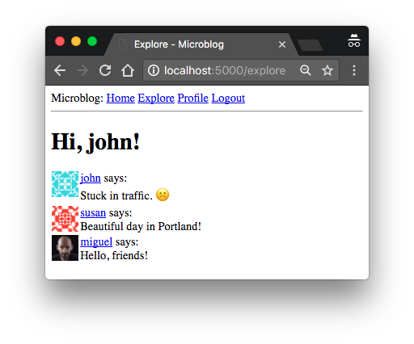
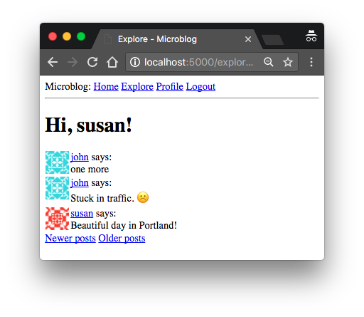

The Flask Mega-Tutorial Part IX: Pagination (2018)
Posted by
on under(Great news! There is a new version of this tutorial!)
This is the ninth installment of the Flask Mega-Tutorial series, in which I'm going to tell you how to paginate lists of database entries.
For your reference, below is a list of the articles in this series.
- Chapter 1: Hello, World!
- Chapter 2: Templates
- Chapter 3: Web Forms
- Chapter 4: Database
- Chapter 5: User Logins
- Chapter 6: Profile Page and Avatars
- Chapter 7: Error Handling
- Chapter 8: Followers
- Chapter 9: Pagination (this article)
- Chapter 10: Email Support
- Chapter 11: Facelift
- Chapter 12: Dates and Times
- Chapter 13: I18n and L10n
- Chapter 14: Ajax
- Chapter 15: A Better Application Structure
- Chapter 16: Full-Text Search
- Chapter 17: Deployment on Linux
- Chapter 18: Deployment on Heroku
- Chapter 19: Deployment on Docker Containers
- Chapter 20: Some JavaScript Magic
- Chapter 21: User Notifications
- Chapter 22: Background Jobs
- Chapter 23: Application Programming Interfaces (APIs)
In Chapter 8 I have made several database changes that were necessary to support the "follower" paradigm that is so popular with social networks. With that functionality in place, I'm ready to remove the last piece of scaffolding that I have put in place in the beginning, the fake posts. In this chapter the application will start accepting blog posts from users, and also deliver them in the home and profile pages as a paginated list.
The GitHub links for this chapter are: Browse, Zip, Diff.
Submission of Blog Posts
Let's start with something simple. The home page needs to have a form in which users can type new posts. First I create a form class:
app/forms.py: Blog submission form.
class PostForm(FlaskForm):
post = TextAreaField('Say something', validators=[
DataRequired(), Length(min=1, max=140)])
submit = SubmitField('Submit')
Next, I can add this form to the template for the main page of the application:
app/templates/index.html: Post submission form in index template
{% extends "base.html" %}
{% block content %}
<h1>Hi, {{ current_user.username }}!</h1>
<form action="" method="post">
{{ form.hidden_tag() }}
<p>
{{ form.post.label }}<br>
{{ form.post(cols=32, rows=4) }}<br>
{% for error in form.post.errors %}
<span style="color: red;">[{{ error }}]</span>
{% endfor %}
</p>
<p>{{ form.submit() }}</p>
</form>
{% for post in posts %}
<p>
{{ post.author.username }} says: <b>{{ post.body }}</b>
</p>
{% endfor %}
{% endblock %}
The changes in this template are similar to how previous forms were handled. The final part is to add the form creation and handling in the view function:
app/routes.py: Post submission form in index view function.
from app.forms import PostForm
from app.models import Post
@app.route('/', methods=['GET', 'POST'])
@app.route('/index', methods=['GET', 'POST'])
@login_required
def index():
form = PostForm()
if form.validate_on_submit():
post = Post(body=form.post.data, author=current_user)
db.session.add(post)
db.session.commit()
flash('Your post is now live!')
return redirect(url_for('index'))
posts = [
{
'author': {'username': 'John'},
'body': 'Beautiful day in Portland!'
},
{
'author': {'username': 'Susan'},
'body': 'The Avengers movie was so cool!'
}
]
return render_template("index.html", title='Home Page', form=form,
posts=posts)
Let's review the changes in this view function one by one:
- I'm now importing the
PostandPostFormclasses - I accept
POSTrequests in both routes associated with theindexview function in addition toGETrequests, since this view function will now receive form data. - The form processing logic inserts a new
Postrecord into the database. - The template receives the
formobject as an additional argument, so that it can render the text field.
Before I continue, I wanted to mention something important related to processing of web forms. Notice how after I process the form data, I end the request by issuing a redirect to the home page. I could have easily skipped the redirect and allowed the function to continue down into the template rendering part, since this is already the index view function.
So, why the redirect? It is a standard practice to respond to a POST request generated by a web form submission with a redirect. This helps mitigate an annoyance with how the refresh command is implemented in web browsers. All the web browser does when you hit the refresh key is to re-issue the last request. If a POST request with a form submission returns a regular response, then a refresh will re-submit the form. Because this is unexpected, the browser is going to ask the user to confirm the duplicate submission, but most users will not understand what the browser is asking them. But if a POST request is answered with a redirect, the browser is now instructed to send a GET request to grab the page indicated in the redirect, so now the last request is not a POST request anymore, and the refresh command works in a more predictable way.
This simple trick is called the Post/Redirect/Get pattern. It avoids inserting duplicate posts when a user inadvertently refreshes the page after submitting a web form.
Displaying Blog Posts
If you recall, I created a couple of fake blog posts that I've been displaying in the home page for a long time. These fake objects are created explicitly in the index view function as a simple Python list:
posts = [
{
'author': {'username': 'John'},
'body': 'Beautiful day in Portland!'
},
{
'author': {'username': 'Susan'},
'body': 'The Avengers movie was so cool!'
}
]
But now I have the followed_posts() method in the User model that returns a query for the posts that a given user wants to see. So now I can replace the fake posts with real posts:
app/routes.py: Display real posts in home page.
@app.route('/', methods=['GET', 'POST'])
@app.route('/index', methods=['GET', 'POST'])
@login_required
def index():
# ...
posts = current_user.followed_posts().all()
return render_template("index.html", title='Home Page', form=form,
posts=posts)
The followed_posts method of the User class returns a SQLAlchemy query object that is configured to grab the posts the user is interested in from the database. Calling all() on this query triggers its execution, with the return value being a list with all the results. So I end up with a structure that is very much alike the one with fake posts that I have been using until now. It's so close that the template does not even need to change.
Making It Easier to Find Users to Follow
As I'm sure you noticed, the application as it is does not do a great job at letting users find other users to follow. In fact, there is actually no way to see what other users are there at all. I'm going to address that with a few simple changes.
I'm going to create a new page that I'm going to call the "Explore" page. This page will work like the home page, but instead of only showing posts from followed users, it will show a global post stream from all users. Here is the new explore view function:
app/routes.py: Explore view function.
@app.route('/explore')
@login_required
def explore():
posts = Post.query.order_by(Post.timestamp.desc()).all()
return render_template('index.html', title='Explore', posts=posts)
Did you notice something odd in this view function? The render_template() call references the index.html template, which I'm using in the main page of the application. Since this page is going to be very similar to the main page, I decided to reuse the template. But one difference with the main page is that in the explore page I do not want to have a form to write blog posts, so in this view function I did not include the form argument in the template call.
To prevent the index.html template from crashing when it tries to render a web form that does not exist, I'm going to add a conditional that only renders the form if it is defined:
app/templates/index.html: Make the blog post submission form optional.
{% extends "base.html" %}
{% block content %}
<h1>Hi, {{ current_user.username }}!</h1>
{% if form %}
<form action="" method="post">
...
</form>
{% endif %}
...
{% endblock %}
I'm also going to add a link to this new page in the navigation bar:
app/templates/base.html: Link to explore page in navigation bar.
<a href="{{ url_for('explore') }}">Explore</a>
Remember the _post.html sub-template that I have introduced in Chapter 6 to render blog posts in the user profile page? This was a small template that was included from the user profile page template, and was separate so that it can also be used from other templates. I'm now going to make a small improvement to it, which is to show the username of the blog post author as a link:
app/templates/_post.html: Show link to author in blog posts.
<table>
<tr valign="top">
<td><img src="{{ post.author.avatar(36) }}"></td>
<td>
<a href="{{ url_for('user', username=post.author.username) }}">
{{ post.author.username }}
</a>
says:<br>{{ post.body }}
</td>
</tr>
</table>
I can now use this sub-template to render blog posts in the home and explore pages:
app/templates/index.html: Use blog post sub-template.
...
{% for post in posts %}
{% include '_post.html' %}
{% endfor %}
...
The sub-template expects a variable named post to exist, and that is how the loop variable in the index template is named, so that works perfectly.
With these small changes, the usability of the application has improved considerably. Now a user can visit the explore page to read blog posts from unknown users and based on those posts find new users to follow, which can be done by simply clicking on a username to access the profile page. Amazing, right?
At this point I suggest you try the application once again, so that you experience these last user interface improvements.

Pagination of Blog Posts
The application is looking better than ever, but showing all of the followed posts in the home page is going to become a problem sooner rather than later. What happens if a user has a thousand followed posts? Or a million? As you can imagine, managing such a large list of posts will be extremely slow and inefficient.
To address that problem, I'm going to paginate the post list. This means that initially I'm going to show just a limited number of posts at a time, and include links to navigate through the entire list of posts. Flask-SQLAlchemy supports pagination natively with the paginate() query method. If for example, I want to get the first twenty followed posts of the user, I can replace the all() call that terminates the query with:
>>> user.followed_posts().paginate(page=1, per_page=20, error_out=False).items
The paginate method can be called on any query object from Flask-SQLAlchemy. It takes three arguments:
- the page number, starting from 1
- the number of items per page
- an error flag. If
True, when an out of range page is requested a 404 error will be automatically returned to the client. IfFalse, an empty list will be returned for out of range pages.
The return value from paginate is a Pagination object. The items attribute of this object contains the list of items in the requested page. There are other useful things in the Pagination object that I will discuss later.
Now let's think about how I can implement pagination in the index() view function. I can start by adding a configuration item to the application that determines how many items will be displayed per page.
config.py: Posts per page configuration.
class Config(object):
# ...
POSTS_PER_PAGE = 3
It is a good idea to have these application-wide "knobs" that can change behaviors in the configuration file, because then I can go to a single place to make adjustments. In the final application I will of course use a larger number than three items per page, but for testing it is useful to work with small numbers.
Next, I need to decide how the page number is going to be incorporated into application URLs. A fairly common way is to use a query string argument to specify an optional page number, defaulting to page 1 if it is not given. Here are some example URLs that show how I'm going to implement this:
- Page 1, implicit: http://localhost:5000/index
- Page 1, explicit: http://localhost:5000/index?page=1
- Page 3: http://localhost:5000/index?page=3
To access arguments given in the query string, I can use the Flask's request.args object. You have seen this already in Chapter 5, where I implemented user login URLs from Flask-Login that can include a next query string argument.
Below you can see how I added pagination to the home and explore view functions:
app/routes.py: Followers association table
@app.route('/', methods=['GET', 'POST'])
@app.route('/index', methods=['GET', 'POST'])
@login_required
def index():
# ...
page = request.args.get('page', 1, type=int)
posts = current_user.followed_posts().paginate(
page=page, per_page=app.config['POSTS_PER_PAGE'], error_out=False)
return render_template('index.html', title='Home', form=form,
posts=posts.items)
@app.route('/explore')
@login_required
def explore():
page = request.args.get('page', 1, type=int)
posts = Post.query.order_by(Post.timestamp.desc()).paginate(
page=page, per_page=app.config['POSTS_PER_PAGE'], error_out=False)
return render_template("index.html", title='Explore', posts=posts.items)
With these changes, the two routes determine the page number to display, either from the page query string argument or a default of 1, and then use the paginate() method to retrieve only the desired page of results. The POSTS_PER_PAGE configuration item that determines the page size is accessed through the app.config object.
Note how easy these changes are, and how little code is affected each time a change is made. I am trying to write each part of the application without making any assumptions about how the other parts work, and this enables me to write modular and robust applications that are easier to extend and to test, and are less likely to fail or have bugs.
Go ahead and try the pagination support. First make sure you have more than three blog posts. This is easier to see in the explore page, which shows posts from all users. You are now going to see just the three most recent posts. If you want to see the next three, type http://localhost:5000/explore?page=2 in your browser's address bar.
Page Navigation
The next change is to add links at the bottom of the blog post list that allow users to navigate to the next and/or previous pages. Remember that I mentioned that the return value from a paginate() call is an object of a Pagination class from Flask-SQLAlchemy? So far, I have used the items attribute of this object, which contains the list of items retrieved for the selected page. But this object has a few other attributes that are useful when building pagination links:
has_next: True if there is at least one more page after the current onehas_prev: True if there is at least one more page before the current onenext_num: page number for the next pageprev_num: page number for the previous page
With these four elements, I can generate next and previous page links and pass them down to the templates for rendering:
app/routes.py: Next and previous page links.
@app.route('/', methods=['GET', 'POST'])
@app.route('/index', methods=['GET', 'POST'])
@login_required
def index():
# ...
page = request.args.get('page', 1, type=int)
posts = current_user.followed_posts().paginate(
page=page, per_page=app.config['POSTS_PER_PAGE'], error_out=False)
next_url = url_for('index', page=posts.next_num) \
if posts.has_next else None
prev_url = url_for('index', page=posts.prev_num) \
if posts.has_prev else None
return render_template('index.html', title='Home', form=form,
posts=posts.items, next_url=next_url,
prev_url=prev_url)
@app.route('/explore')
@login_required
def explore():
page = request.args.get('page', 1, type=int)
posts = Post.query.order_by(Post.timestamp.desc()).paginate(
page=page, per_page=app.config['POSTS_PER_PAGE'], error_out=False)
next_url = url_for('explore', page=posts.next_num) \
if posts.has_next else None
prev_url = url_for('explore', page=posts.prev_num) \
if posts.has_prev else None
return render_template("index.html", title='Explore', posts=posts.items,
next_url=next_url, prev_url=prev_url)
The next_url and prev_url in these two view functions are going to be set to a URL returned by url_for() only if there is a page in that direction. If the current page is at one of the ends of the collection of posts, then the has_next or has_prev attributes of the Pagination object will be False, and in that case the link in that direction will be set to None.
One interesting aspect of the url_for() function that I haven't discussed before is that you can add any keyword arguments to it, and if the names of those arguments are not referenced in the URL directly, then Flask will include them in the URL as query arguments.
The pagination links are being set to the index.html template, so now let's render them on the page, right below the post list:
app/templates/index.html: Render pagination links on the template.
...
{% for post in posts %}
{% include '_post.html' %}
{% endfor %}
{% if prev_url %}
<a href="{{ prev_url }}">Newer posts</a>
{% endif %}
{% if next_url %}
<a href="{{ next_url }}">Older posts</a>
{% endif %}
...
This change adds two links below the post list on both the index and explore pages. The first link is labeled "Newer posts", and it points to the previous page (keep in mind I'm showing posts sorted by newest first, so the first page is the one with the newest content). The second link is labeled "Older posts" and points to the next page of posts. If any of these two links is None, then it is omitted from the page, through a conditional.

Pagination in the User Profile Page
The changes for the index page are sufficient for now. However, there is also a list of posts in the user profile page, which shows only posts from the owner of the profile. To be consistent, the user profile page should be changed to match the pagination style of the index page.
I begin by updating the user profile view function, which still had a list of fake post objects in it.
app/routes.py: Pagination in the user profile view function.
@app.route('/user/<username>')
@login_required
def user(username):
user = User.query.filter_by(username=username).first_or_404()
page = request.args.get('page', 1, type=int)
posts = user.posts.order_by(Post.timestamp.desc()).paginate(
page=page, per_page=app.config['POSTS_PER_PAGE'], error_out=False)
next_url = url_for('user', username=user.username, page=posts.next_num) \
if posts.has_next else None
prev_url = url_for('user', username=user.username, page=posts.prev_num) \
if posts.has_prev else None
form = EmptyForm()
return render_template('user.html', user=user, posts=posts.items,
next_url=next_url, prev_url=prev_url, form=form)
To get the list of posts from the user, I take advantage of the fact that the user.posts relationship is a query that is already set up by SQLAlchemy as a result of the db.relationship() definition in the User model. I take this query and add a order_by() clause so that I get the newest posts first, and then do the pagination exactly like I did for the posts in the index and explore pages. Note that the pagination links that are generated by the url_for() function need the extra username argument, because they are pointing back at the user profile page, which has this username as a dynamic component of the URL.
Finally, the changes to the user.html template are identical to those I made on the index page:
app/templates/user.html: Pagination links in the user profile template.
...
{% for post in posts %}
{% include '_post.html' %}
{% endfor %}
{% if prev_url %}
<a href="{{ prev_url }}">Newer posts</a>
{% endif %}
{% if next_url %}
<a href="{{ next_url }}">Older posts</a>
{% endif %}
After you are done experiment with the pagination feature, you can set the POSTS_PER_PAGE configuration item to a more reasonable value:
config.py: Posts per page configuration.
class Config(object):
# ...
POSTS_PER_PAGE = 25
Become a Patron!
Hello, and thank you for visiting my blog! If you enjoyed this article, please consider supporting my work on this blog on Patreon!

-
#26 Miguel Grinberg said
@Tiago: the purpose of the post/redirect/get pattern is to avoid duplicate form submissions. If the form was rejected by the server, a duplicate submission is not a problem, since the form will just be rejected a second time. So in general, I do not worry about this pattern when the form validation fails. If you wanted to implement this pattern for the error cases it gets tricky, because you need to save the data that was submitted with the form, so that you can recover it after the redirect takes place. You could, for example, save the values of all the form fields to the user session, then redirect, and then pop them out of the session when the redirect is invoked. Not worth the effort, if you ask me.
-
#27 Shubham Agarwal said
Hey Miguel!Thanx fr the this awesome series
How can we post images instead of text???/ -
#28 Miguel Grinberg said
@Shubham: for that you need to implement file uploading. This tutorial does not include that, but you can find how to upload images in the Flask documentation.
-
#29 Nathan said
I tried the code and got the error 'Pagination' is not iterable. the debugger says it is flagged when it runes {% for post in posts %} I have been staring at this for several hours and i tried to make it into posts.items or posts.collection and if i do so it runs but the posts dont show up on the user page.
I have no idea what to do. -
#30 Krzysztof Filimonowicz said
Hello Miguel,
I would like to follow up on one issue I've encountered while developing the blog. The issue in question was that some action caused the database to degrade from what was already established, e.g. an "about me" column. I believe I know now what is the cause of this issue, but I'd need some assistance with preventing the issue from occurring in the future.
The thing is, sometimes I make changes on Pythonanywhere where I host the blog instead of Github and when I want to sync it back with the latter I have to reset it (git reset --hard HEAD). I noticed that at that point the database becomes out of sync. I assume it could be avoided by adding exceptions to the .gitignore file so that some of the files on the host platform wouldn't be affected by any git-related actions. I assumed that adding "pycache/", "migrations/" and "app.db" would do the job, but the issue keeps occuring. Could you verify if that line of thought is valid at all? -
#31 Miguel Grinberg said
@Nathan: You need to pass posts=posts.items to the render_template() call. My guess is that you have posts=posts there, so you are passing the pagination object as the list of posts.
-
#32 Miguel Grinberg said
@Krzysztof: committing the database is a bad idea, so yeah, I think adding it to gitignore is good. You do want to keep the migrations though, those are Python scripts and they need to be kept in sync with the code.
-
#33 Mayur Pande said
Hi, nice article. How do I go about submitting form data that is on multiple pages. As at the moment I am only able to get the data that is on the current page submitted through, where as when I click submit I want to be able to get all the data through. Is this possible?
-
#34 Miguel Grinberg said
@Mayur: I don't understand what you mean. You can't have form data on multiple pages unless you have multiple forms, one on each page. The browser will submit a single form at a time.
-
#35 Chris Dell said
Hi Miguel,
Do you have any recommendations for applying this pagination technique to data returned from an elasticearch index instead of an SQL-Alchemy database? I am interested in the same functionality as this part of the tutorial for my page, but am having trouble linking how to do this using my elasticsearch index. Currently, I return all of my query responses in one scrollable page, and I want to separate how flask returns that data instead of doing it on the elasticsearch side.
Thanks,
Chris -
#36 Miguel Grinberg said
@Chris: the data returned by the elasticsearch index is linked to the SQLAlchemy database, at least in my implementation. If you want to talk directly to elasticsearch you can use the "from" and "size" arguments to control pagination.
-
#37 Munawar said
Hi Miguel
is it possible to use SQLAlchemy Paginate function for VIEWs instead of original table???
or as an alternative, can we use pagination on raw sql queries without using SQLAlchemy ??Thanks
-
#38 Miguel Grinberg said
@Munawar: It may be possible to trick SQLAlchemy into thinking a view is a table, and then all the pagination options would work. If you want to play it safe though, just use the LIMIT and OFFSET options in your raw SQL query to do the pagination.
-
#39 nick said
Hello, Miguel and everyone following this blog, kindly assist here
werkzeug.routing.BuildError: Could not build url for endpoint 'follow' with values ['username']. Did you mean 'unfollow' instead?
File "/home/kino/Desktop/microblog/app/templates/user.html", line 15, in block "content"
{% if user.last_seen %} <p>Last seen on: {{ user.last_seen }} </p> {% endif %} <p>{{ user.followers.count() }} followers {{ user.followed.count() }} following</p> {% if user == current_user %} <p><a href="{{ url_for('edit_profile') }}">Edit your profile</a></p> {% elif not current_user.is_following(user) %} <p><a href="{{ url_for('follow', username=user.username) }}">Follow</a></p> {% else %} <p><a href="{{ url_for('unfollow', username=user.username) }}">Unfollow</a></p> {% endif %} </td>[Open an interactive python shell in this frame] </tr>
-
#40 Miguel Grinberg said
@nick: the "follow" reference in the error message is for the view function name. It's basically telling you that you don't have any view functions with that name. Check in the routes.py module to see if you named this function with a different name.
-
#41 Cax said
hi Miguel
i have some forms where user can enter or choose values.
When submit, the first page is well because certain data show. But when i click the older or newer button ,the page has no data,and the content of form disappear. What should I do to save form value during new page load?
thanks ! -
#42 Miguel Grinberg said
@Cax: you can add these context information to the query string of the pagination links, or else you can also store those values in the user session.
-
#43 Spencer said
Hi Miguel,
How could you implement an infinite scroll whereby it would query more posts once you reached the bottom of the page?thanks!
-
#44 Miguel Grinberg said
@Spencer: Good question! The backend does not change. For the client, my recommendation is that you find a library that implements the infinite scrolling based on the client-side framework that you use and configure the paginated requests so that they are issued at the proper time. If you use jQuery for example, try https://infinite-scroll.com/.
-
#45 Pavel said
Good day, Miguel!
i'v got a question.when i tried to paginate hard query with joining to another table, thrown an error: AttributeError: 'list' object has no attribute 'paginate'
def get_vacancy(page=1):
form = FindVacancy()
if not form.search.data is None:
vacancies = db.session.query(Vacancy.id, Vacancy.url, Vacancy.job_title, Vacancy.id_company, Company.name, Company.web_site).\
join(Company).\
filter(Vacancy.info.like('%' + form.search.data + '%')).\
order_by(Company.name).\
all()
return render_template('vacancy.html', title='Vacancy', vacancies=vacancies, form=form)
else:
#vacancies = Vacancy.query.paginate(page, VACANCY_PER_PAGE, False)
#return render_template('vacancy.html', title='Vacancy', vacancies=vacancies, form=form)
vacancies = (db.session.query(Vacancy.id, Vacancy.url, Vacancy.job_title, Vacancy.id_company, Company.name, Company.web_site).\
join(Company).\
order_by(Company.name).\
all()).paginate(page, VACANCY_PER_PAGE, False)
return render_template('vacancy.html', title='Vacancy', vacancies=vacancies, form=form)how can i use paginate with join query?
thanx in advance!
-
#46 Miguel Grinberg said
@Pavel: the relationship that you are trying to paginate needs to be defined with the "lazy=dynamic" option. This makes the relationship attribute return a query object that can be modified before it executes instead of a list with the query results.
-
#47 Ngoc Anh Do said
Good day, Miguel!
I'v got a question.
I'm trying to create a feature allow teacher to create a post attach with homework file. Students can make comment at this post attach with their solution file for homework. But i cant' figure out how to implement the relationship between homework file and solution file!
This is my models file: https://pastebin.com/ixAE8MmR
Thank you! -
#48 Miguel Grinberg said
@Ngoc: your Solution model needs a user_id and a homework_id foreign keys. Then you can set up one-to-many relationships like the one shown in Part IV of this tutorial.
-
#49 mudonroad said
Hi,
@Miguel Grinberg Thanks for a great blog
What would be the best way to delete a post? -
#50 Miguel Grinberg said
@mudonroad: for posts that are authored by the logged in user you can add a delete link in the page. The link will take you to a new route that deletes the post by calling db.session.delete(post) and then committing the session.